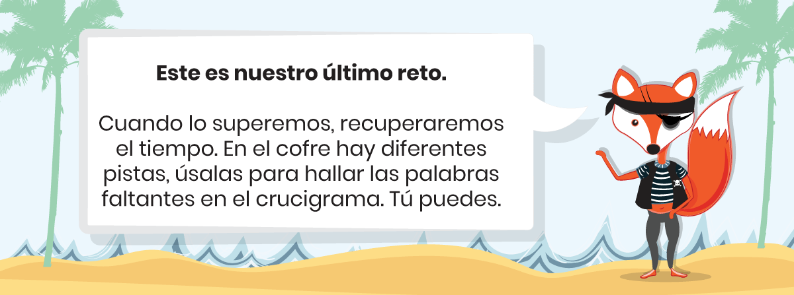
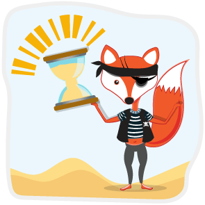

Objetivo de aprendizaje: consolidar conceptos adquiridos.


Gracias valiente, lo has logrado. Con tu ayuda hemos recuperado el tiempo y hemos adquirido muchos conocimientos.
- Los cambios de era fueron marcados por hechos decisivos, que a su vez llevaron a cambios ideológicos fuertes.
- Son cambios que se construyeron durante años, nunca se trata de hechos puntuales y aislados.
- Somos consecuencia de un sin fin de hechos. Piensa, ¿qué hubiera pasado si…? O, si tal acontecimiento nunca hubiera ocurrido, ¿cómo seríamos hoy?